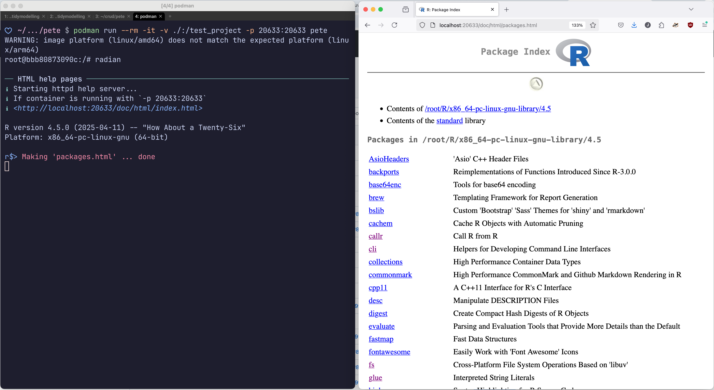

Another challenge!
This is a follow-on about my attempt to make a container that can be used as an interactive Neovim development environment with R and Quarto.
Pete, who started me dancing down the devil’s road in the first place, had a follow-up request:
[…] is there a way to run R’s HTML help server in the container and view it in a browser on the host?
Sounds like that should be easy to do. After all, I was able to get the Quarto HTML preview and hdg graphics viewer for R sorted. I bet it’ll take 30 minutes or so!
How naive of me.
Problem / solution
For those who don’t know - and this included me before this week - you can launch a website containing all of the help pages for both R’s standard library (base, tools, utils, Matrix, etc.) and user installed packages. You can launch this website by using the help.start() function that comes with R. The more you know.
This is useful if, for example, you’re using R in a terminal setting, which as we established last time is what Pete does.
I quickly found out that the root cause of the problem is within the help.start() function body. Specifically, both help.start() and a function it calls, tools::startDynamicHelp(), have the IP address 127.0.0.1 hard coded into their definitions. This is a problem because HTTP servers running inside containers using 127.0.0.1 can’t be accessed from outside the container. Instead, you have to use 0.0.0.0. Thankfully, it is at least possible to tell R that you always want to use the same port when running the server.
A few hours later I hit a brick wall and posted about it on Mastodon. R legend Yihui Xie jumped in and replied, kindly telling us exactly what we needed to do. This was very much appreciated – I had clearly gone down a dead end. It gave me hope!
What Yihui turned us onto was a command line tool called socat. You can use it to create proxies and bind ports. In our case, the magic command looked like this:
socat TCP-LISTEN:20633,bind=0.0.0.0,fork TCP:127.0.0.1:20000 &This means: Accept traffic (listen) on 0.0.0.0:20633, i.e. receive requests for web pages as we browse the site. Then pass the requests to 127.0.0.1:20000. Fork allows us to handle multiple requests. And the final ampersand tells bash to run the socat process in the background, otherwise socat will make the terminal busy.
To put this into practice I added some more R code to ~/.Rprofile during container build time. This is an important file because whenever R starts it runs the code in this file. That means we can use it for performing setup, such as getting socat to forward our traffic. The code looks like this:
#| eval: false
if (interactive()) {
options('help.ports' = 20000)
system('socat TCP-LISTEN:20633,bind=0.0.0.0,fork TCP:127.0.0.1:20000 &')
cli::cli_h1('HTML help pages')
cli::cli_alert_info('Starting httpd help server...')
resp <- suppressMessages(tools::startDynamicHelp())
if (resp != 20000) {
cli::cli_alert_danger('Failed to start server. Try running {.fn tools::startDynamicHelp} manually to see what happens.')
cli::cli_text('')
} else {
cli::cli_alert_info('If container is running with {.code -p 20633:20633}')
cli::cli_alert_info('{.url http://localhost:20633/doc/html/index.html}')
cli::cli_text('')
}
rm(resp)
.Last <- function() {
# Attempt to clean up after ourselves when R closes.
# When R closes the help pages are no longer served, so we
# should also stop socat.
# A bit of a blunt instrument as it will terminal ALL instances
# of socat. But I'm assuming for this container that R help will
# be the sole user of the command, so it's safe to do
x <- suppressWarnings(system('pgrep socat', intern = TRUE))
if (length(x) >= 1L) {
system('pgrep socat | xargs kill -9')
}
}
}When starting R with the radian terminal, we get this lovely startup message:
As my comments say in the code block, this is a rather inelegant solution. There is the possibility of using the bash command $! in order to get the PID of the socat process ($! gets the PID of the most recent background process) and do a targeted kill. But I found that socat was a bit erratic, sometimes spawning a few processes. Unfortunately the second and third processes weren’t children of the first, otherwise we could have captured the value of $!, say as panret_pid and used pkill -P parent_pid. On the plus side I think this is a very clean solution, insofar as socat will always be started and killed in tandem with R.
How it’s going
Well, I wrote this blog post using Neovim from the container in question! That includes previewing the post :)
The Containerfile now exists in a GitHub repo. At time of writing there’s no documentation, but I will get to it soon. One thing I’ve noticed is that the container image size is rather large, about 2.7GB. Maybe that’s ok - there is a lot of stuff being installed into it, after all. It’s also very tiresome having the plugins install every time the container is restarted and Neovim gets invoked for the first time. I think it might be possible to simply copy everything from .local/share/nvim/lazy into the GitHub repo and copy it into the image at build time instead, but that requires some experimentation.